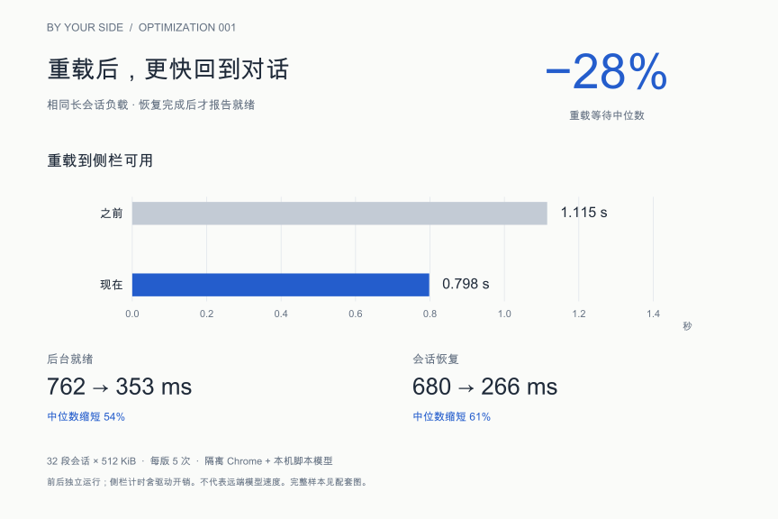

保存每次优化的证据，也保存当时的理解。从“为什么改”，到“改得怎样”，再到“下一步想验证什么”。
行为修复
原因、修复边界与真实扩展回归结果。
Optimization 001
每次重载后，侧栏停留在“连接中”，用户要等内部助手恢复会话，才能继续使用。

原话、已确认的规则与整理者的理解分开保存。新观点链接旧记录。
“关于连接中的话，要给出具体的缩短时间方案，然后来验证。”
用户原话 · 2026-10-31
隔离实验已看到改善，下一步需要日常负载、较长历史和较低性能设备上的证据。这里保存问题与跟进，不把待验证想法写成已上线功能。
以前如何判断，现在为什么改变，未来准备怎样验证。旧观点保留，新观点链接回来。